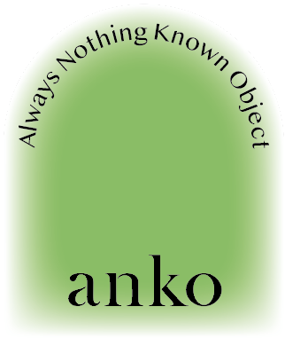

anko
- Furniture
- Fabric
- Flowers
Fabric
Crafted from fabrics selected
for their quality and designed for everyday wear,
the wardrobe is eminently modular—the supple silhouettes
and soft color palette allow anko outfits to be restyled
and accented over time. Pieces from different collections
and seasons can be paired effortlessly while maintaining the space
floating around the body as it moves.
Some elements are borrowed from traditional Asian clothing:
deep pockets, sleek design, and the allegory of the perfectly proportioned
home as a protective shelter for a peaceful, self-assured life.
Workwear and military garb lend practicality and sturdy finishing
to the pieces in the wardrobe.
Based in Seoul, South Korea.
Founded in 2021.